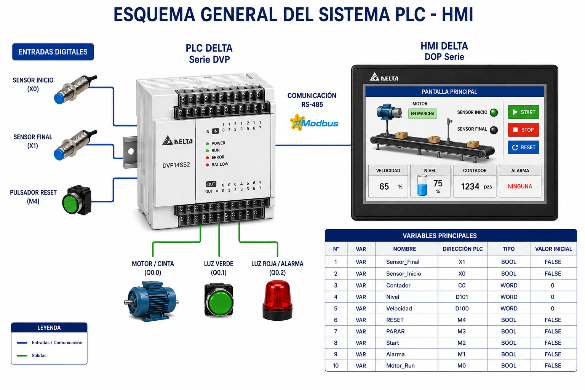
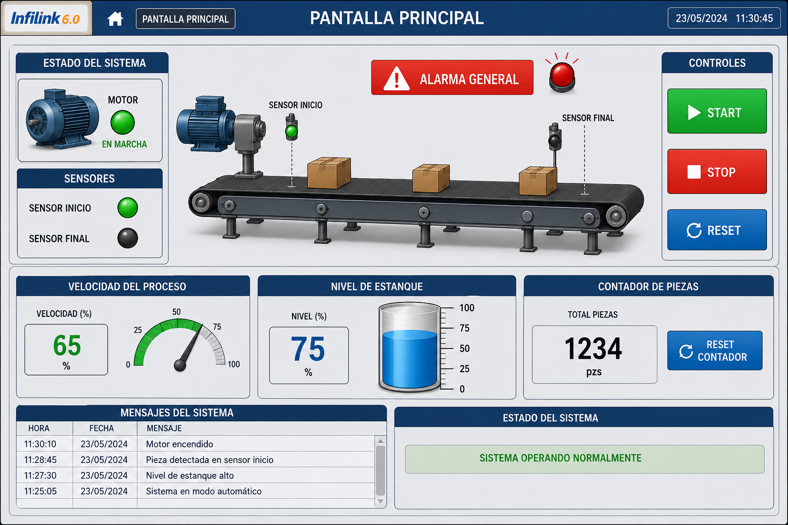
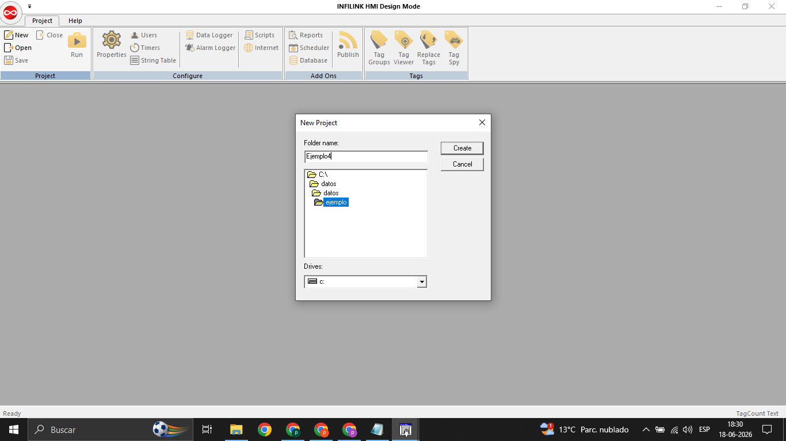
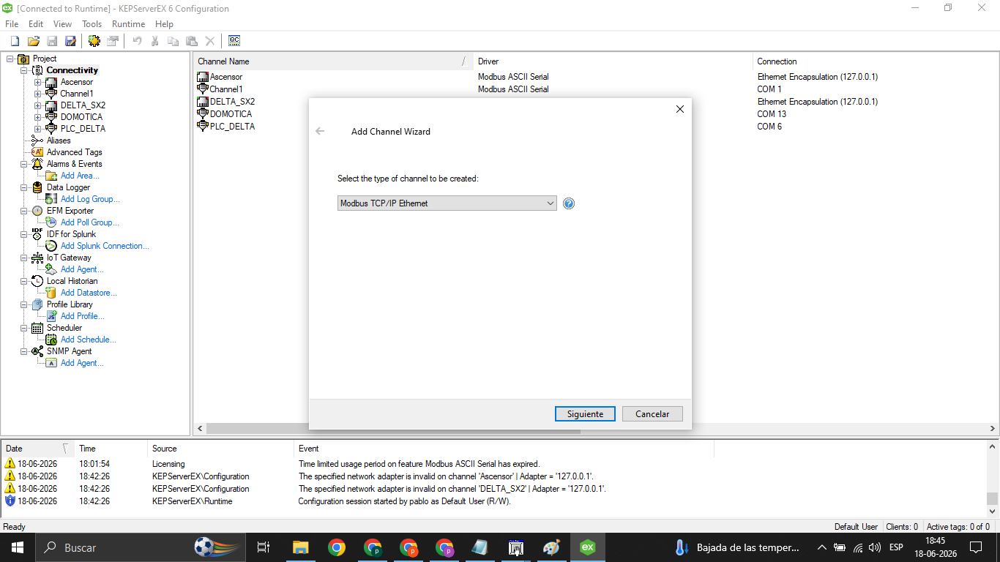
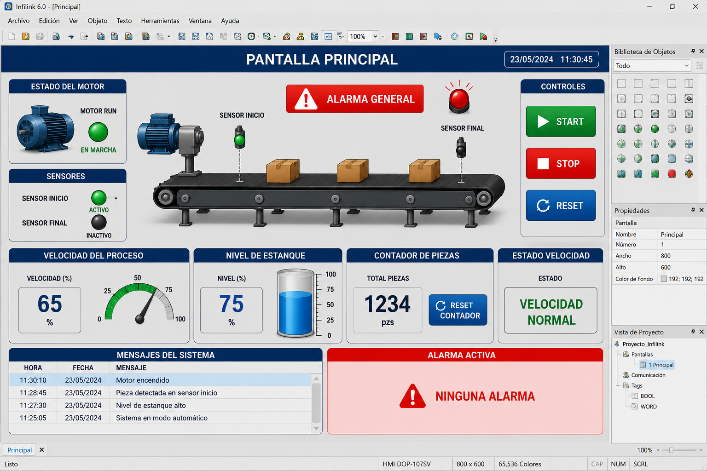

Nombre: ____________________________________________
Curso: ____________________
Fecha: ____________________
Docente: ____________________________________________
En esta práctica vas a construir una pantalla HMI en Infilink 6.0 para supervisar un proceso industrial simple. Primero usarás animaciones nativas del software y luego aplicarás scripts básicos para entregar más información al operador.
Trabajarás con un PLC Delta serie DVP que ya tiene un programa base cargado. El PLC entregará variables tipo BOOL y WORD que usarás desde Infilink para representar estados, valores, alarmas y mensajes.
Imagen 1: Esquema general del sistema PLC - HMI

| Variable | Tipo | Descripción |
|---|---|---|
| MOTOR_RUN | BOOL | Motor encendido o apagado |
| SENSOR_INICIO | BOOL | Sensor de entrada |
| SENSOR_FINAL | BOOL | Sensor de salida |
| ALARMA | BOOL | Falla general del sistema |
| START | BOOL | Orden de partida desde HMI |
| STOP | BOOL | Orden de parada desde HMI |
| RESET | BOOL | Reinicio de alarma o contador |
| VELOCIDAD | WORD | Velocidad simulada entre 0 y 100 |
| NIVEL | WORD | Nivel simulado entre 0 y 100 |
| CONTADOR | WORD | Conteo de piezas |
Debes crear una pantalla HMI que represente una cinta transportadora con motor, sensores, contador, nivel de estanque y alarma.
Tu pantalla debe incluir como mínimo:
Imagen 2: Diseño referencial de la pantalla HMI

Abre Infilink 6.0 y crea un nuevo proyecto. Define el nombre del proyecto y la pantalla principal.
Imagen 3: Creación del proyecto

Configura el canal de comunicación correspondiente al PLC Delta DVP. Verifica que Infilink pueda leer las variables del PLC.
Imagen 4: Configuración de comunicación

Crea los tags indicados en la tabla de variables. Respeta el nombre, tipo de dato y dirección asignada por el docente.
Imagen 5: Creación de tags

Antes de usar scripts, configura animaciones directamente desde las propiedades de los objetos gráficos.
Crea un piloto luminoso o indicador gráfico asociado a la variable MOTOR_RUN.
| Valor | Estado esperado | Color sugerido |
|---|---|---|
| 0 | Motor detenido | Gris |
| 1 | Motor en marcha | Verde |
Crea dos indicadores para SENSOR_INICIO y SENSOR_FINAL. Cuando el sensor esté activo, debe verse claramente en pantalla.
Crea una barra vertical asociada a la variable NIVEL. Configura el rango de trabajo entre 0 y 100.
Agrega visualizadores numéricos para las variables VELOCIDAD y CONTADOR.
Crea un texto que diga ALARMA ACTIVA. Configura su visibilidad para que aparezca solo cuando la variable ALARMA esté activa.
Ahora usarás scripts para interpretar variables y generar mensajes útiles. Los siguientes ejemplos muestran la lógica que debes implementar en Infilink.
Crea un mensaje que indique si el proceso está detenido, lento o en velocidad normal.
IF VELOCIDAD = 0 THEN
MensajeVelocidad = "DETENIDO"
ELSEIF VELOCIDAD < 50 THEN
MensajeVelocidad = "VELOCIDAD BAJA"
ELSE
MensajeVelocidad = "VELOCIDAD NORMAL"
END IF
Genera una alarma cuando el nivel sea superior a 80.
IF NIVEL > 80 THEN
ALARMA = 1
END IF
Muestra un aviso cuando el contador supere las 1000 piezas.
IF CONTADOR > 1000 THEN
MensajeMantenimiento = "REALIZAR MANTENIMIENTO"
END IF
Muestra un texto según el estado del sensor de inicio.
IF SENSOR_INICIO = 1 THEN
MensajeSensor = "PIEZA DETECTADA"
ELSE
MensajeSensor = "SIN PIEZA"
END IF
Construye una pantalla final que integre comunicación, tags, animaciones nativas y scripts.
| Requisito | Cantidad mínima |
|---|---|
| Tags BOOL utilizados | 5 |
| Tags WORD utilizados | 3 |
| Animaciones nativas | 4 |
| Scripts implementados | 2 |
| Alarmas visuales | 1 |
| Botones de control | 3 |
1. ¿Qué ventajas tienen las animaciones nativas frente a los scripts?
2. ¿Cuándo conviene usar scripts en lugar de animaciones nativas?
3. ¿Qué riesgo existe al escribir variables desde la HMI hacia el PLC?
4. ¿Qué información adicional puedes entregar al operador mediante scripts?
5. ¿Qué parte fue más sencilla: animar objetos o programar scripts? Justifica.
| Criterio | Sí | Parcialmente | No |
|---|---|---|---|
| Configuré la comunicación con el PLC. | |||
| Creé los tags solicitados. | |||
| Usé variables BOOL en la pantalla. | |||
| Usé variables WORD en la pantalla. | |||
| Configuré animaciones nativas. | |||
| Implementé scripts básicos. | |||
| La pantalla final es clara y ordenada. |
| Criterio | Logrado | Medianamente logrado | No logrado |
|---|---|---|---|
| Comunicación PLC-HMI | Lee y escribe variables correctamente. | Presenta fallas menores. | No establece comunicación. |
| Creación de tags | Todos los tags están correctamente configurados. | Hay errores menores en algunos tags. | Los tags no funcionan. |
| Animaciones nativas | Las animaciones representan claramente el proceso. | Algunas animaciones funcionan parcialmente. | No hay animaciones funcionales. |
| Scripts | Los scripts funcionan y aportan información útil. | Los scripts son incompletos o poco claros. | No implementa scripts. |
| Pantalla final | La pantalla es clara, ordenada y técnica. | La pantalla es comprensible con desorden menor. | La pantalla es confusa o incompleta. |
| Análisis | Responde con argumentos técnicos. | Responde parcialmente. | No responde o no justifica. |
Nota final: ___________________________